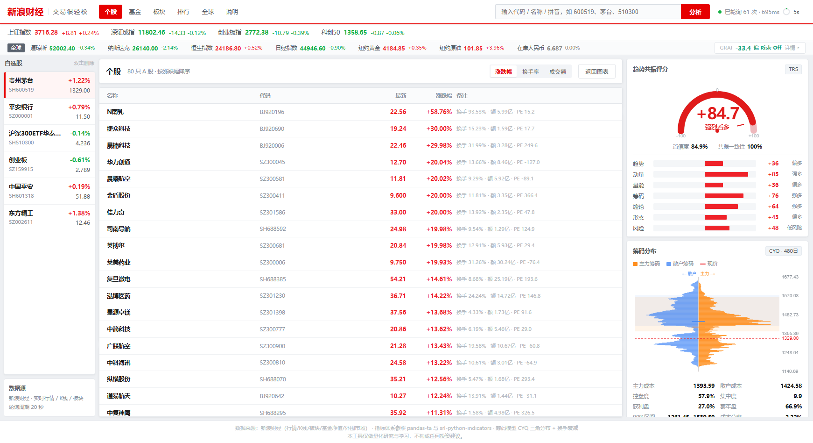

Referer ——
从 *.github.io 发起的请求会被直接返回 Forbidden。
所以行情和 K 线必须由本地 Python 后端代理转发，浏览器里拿不到。
下面的截图是真实运行效果，想用得把代码下载到本地跑。
把「看盘软件里散落的信息」压成一套可量化的结论，而不是再做一个行情网页。
新浪财经实时行情、五档盘口、日/周/月/5·15·30·60 分钟 K 线、行业板块、 场外基金净值、外围市场。行情 5 秒一轮，深度分析 30 秒一轮。
20+ 接口 · 分层刷新纯 Python 实现 40+ 指标，命名与默认参数对齐 pandas-ta，分组对齐 srl-python-indicators。EMA/RMA 会跳过前导空值——这个细节决定了 MACD 是否为空。
SMA EMA RSI MACD ADX KDJ OBV CMF SupertrendK线包含处理 → 分型 → 笔（老笔标准）→ 线段（特征序列）→ 中枢 → 背驰 → 一二三买卖点。 不是画几条折线，是真按原文口径算的。
背驰用 MACD 面积比较CYQ 三角分布 + 换手衰减 + 主力/散户双层模型。两层用不同尖锐度的分布核： 主力集中在均价、散户铺满区间，再配合位置权重，两个分布才能在价格上分开。
主力集中区 · 散户集中区 · POC · 价值区威科夫六阶段（吸筹/洗盘/拉升/派发/下跌/横盘）软打分 + softmax， 并把历史切成片段，算出每个阶段的成交量加权成本。
避免硬阈值导致阶段跳变两类基金优劣标准完全不同：被动看跟踪误差，主动看 Jensen Alpha / 信息比率。 还会反推「这只基金到底有多主动」，主动产品相关性 0.98 直接提示「伪主动」。
11 个行业基准自动匹配美股/港股/日经/外汇/商品 31 个标的，压成一个 全球风险偏好指数： 美股 +0.34、恒生 +0.20、美元人民币 -0.16、黄金 -0.10……并给出对 A 股的传导判断。
Risk-On / Risk-Off七个维度各自 tanh 软饱和到 [-1,1] 再加权。为什么不用线性求和？ 因为 RSI 能到 90、MACD 柱能很大，线性相加会让某个维度吞掉其他所有维度。
趋势 动量 量能 筹码 缠论 形态 风险新浪财经风格，全部原生 Canvas 手绘，没有任何 CDN 依赖。

只要有 Python 3.9+，不需要 pip install 任何东西。
页面上方「Code → Download ZIP」解压，或者
git clone 下来。
Windows 直接双击 启动.bat，控制台开始打印抓取日志， 浏览器自动打开界面。
顶部搜 600519 / 茅台 / 510300 /
AAPL，回车即可。
# 命令行方式（也可以双击 终端分析.bat） python server.py # 启动服务 → http://127.0.0.1:8765 python cli.py 600519 # 终端直接看分析报告 python cli.py 600519 000001 510300 # 批量 # 端口被占用会自动往后找，最多试 12 个 # 重复双击启动.bat 会检测到已有实例，直接开浏览器
m_t = 0.5 + 0.42·tanh(0.9(vr-1) + 5r + 1.8(0.5-p))100·tanh(Σ wᵢ·(涨跌幅ᵢ/典型日波动ᵢ) + 0.15·(美股52周分位-0.5)·2)S = 100·tanh(2.2·ΣwᵢDᵢ/Σwᵢ)，Dᵢ ∈ [-1,1]max(0.25, 1 + 年化/10) 打折。